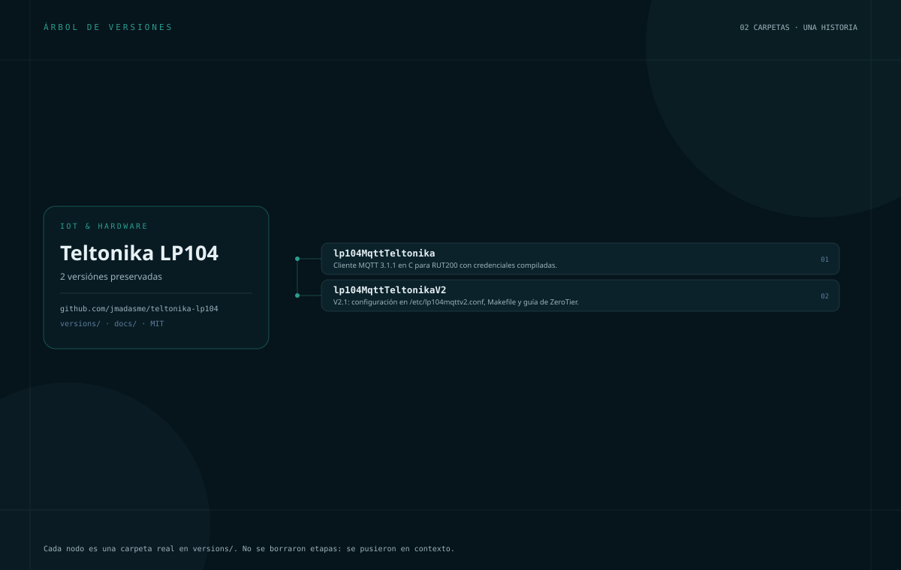

lp104MqttTeltonika
10 archivosCliente MQTT 3.1.1 en C para RUT200 con credenciales compiladas.
🔒 privadaDos versiones de un publicador MQTT en C para RUT200, con credenciales fuera del binario en la V2.

Cliente MQTT 3.1.1 compilado para el router Teltonika RUT200. La primera versión lleva la configuración compilada; la V2 la mueve a /etc/lp104mqttv2.conf e incluye Makefile y guía de ZeroTier.
Un router industrial no siempre tiene un cliente MQTT flexible, y compilar credenciales dentro del binario obliga a recompilar para cambiar de red.
Un cliente C pequeño, compilado para la arquitectura del RUT200, con la configuración separada en un archivo del sistema en la V2.
Cada carpeta conserva una etapa del proyecto. No se borraron las anteriores: se pusieron en contexto.
Cliente MQTT 3.1.1 en C para RUT200 con credenciales compiladas.
🔒 privadaV2.1: configuración en /etc/lp104mqttv2.conf, Makefile y guía de ZeroTier.
Ver carpetaCliente MQTT 3.1.1 escrito en C para el router Teltonika RUT200. Cada 30 segundos lee señal celular, usuarios WiFi asociados, carga de CPU y temperatura del módem, y publica un JSON en dos tópicos del broker. El binario es estático, MIPS, sin librerías externas, y corre como servicio procd con reconexión y backoff exponencial.
Apunta a instalaciones que ya tienen un RUT200 con datos móviles y necesitan telemetría sin agregar un dispositivo. La familia conserva dos versiones: la primera con la configuración compilada y la V2, que mueve las credenciales a /etc/lp104mqttv2.conf. La comparación es el aporte, porque muestra cómo un detalle de diseño —dónde viven los secretos— cambia el costo de operar el equipo.
El README original de la versión de referencia, completo.
Telemetría MQTT para routers Teltonika RUT200 — Cliente MQTT 3.1.1 en C puro para OpenWrt/RutOS
Versión documentada: V2.1 — Las credenciales MQTT ya no se compilan en el binario: se leen en tiempo de ejecución desde
/etc/lp104mqttv2.confen el router. Documentación actualizada tras el cambio V2.1 (auditado APROBADO — SIN INCIDENCIAS).
make deploy-v2/etc/lp104mqttv2.conflp104mqttv2 es un cliente MQTT 3.1.1 implementado enteramente a mano en C, diseñado para
ejecutarse en el router Teltonika RUT200 (RutOS/OpenWrt). El programa recopila telemetría del
dispositivo — señal celular, usuarios WiFi conectados, carga de CPU y temperatura del módem —
y la publica periódicamente vía MQTT hacia un broker remoto (www.smartage.cl:1886).
El cliente MQTT no utiliza librerías externas (sin libmosquitto, sin paho). Todo el protocolo
MQTT 3.1.1 se implementa byte a byte: paquetes CONNECT, CONNACK, PUBLISH (QoS 0), PINGREQ y
PINGRESP se construyen y parsean directamente con write()/read() sobre un socket TCP.
Características principales:
-static) — sin dependencias de bibliotecas compartidasuser/pass) leídas en runtime desde /etc/lp104mqttv2.conf
— cambiarlas no requiere recompilar (ver Configuración)report/online = "true")| Parámetro | Valor |
|---|---|
| Modelo | Teltonika RUT200 (machine Teltonika RUT2M) |
| Serie | RUT2xx |
| Chipset / SoC | MediaTek MT7628AN (MIPS 24KEc, 580 MHz, little-endian) |
| Arquitectura | mipsel_24kc — MIPS32 rel2, ELF32 little-endian, ABI o32 |
| Target OpenWrt | ramips/mt76x8 |
| Versión RutOS | RUT2M_R_00.07.22.3 |
| Versión OpenWrt base | 21.02.0 |
| RAM | 128 MB DDR2 |
| Flash | 16 MB SPI NOR (overlay rw en /etc y /usr/local) |
| Conectividad | 4G LTE Cat 4 (módem Quectel EC200A), WiFi 2.4 GHz 802.11b/g/n (1 radio), 2x Ethernet |
| libc | musl (RutOS 7 / OpenWrt 21.02) |
| Modo del binario | ELF 32-bit LSB, MIPS32 rel2, estáticamente enlazado, strip (~95 KB) |
| Acceso SSH | root@192.168.1.2:22 — en el despliegue real: root@192.168.194.229 |
Nota de temperatura: el MT7628AN no expone sensor térmico de CPU vía
/sys/class/thermal/thermal_zone*/temp. La "Temperatura" que muestra el WebUI y la que publica este programa es la del módem celular, obtenible congsmctl -c.
El programa opera con un ciclo de vida simple pero robusto (en producción corre como servicio
procd). La carga de configuración es lo primero que hace main() después de las señales:
1. init_signals(): SIGTERM/SIGINT → shutdown limpio; SIGPIPE → ignorar
2. config_load(&g_cfg): ← V2.1
lee /etc/lp104mqttv2.conf (user, pass, opcionales client_id/broker/port).
Si falta el archivo → WARNING + ERROR visible; user/pass quedan vacíos.
NUNCA loguea la password.
3. Construir tópicos con g_cfg.client_id:
{client_id}/report/online y {client_id}/report/status
4. BUCLE PRINCIPAL (reconexión automática):
a. Resolver DNS del broker (g_cfg.broker) y conectar TCP (timeout 10s, TCP_NODELAY)
b. Enviar MQTT CONNECT (clean session, g_cfg.user, g_cfg.pass, keepalive 60s)
c. Esperar CONNACK (timeout 10s, validar rc=0)
d. Publicar reporte inicial (online="true" + JSON de telemetría)
e. BUCLE DE SESIÓN:
- poll() el socket con timeout hasta el próximo evento (30s)
- Leer/descartar datos entrantes (PINGRESP, etc.)
- Cada 30s: recolectar métricas y publicar reporte
- Si inactividad ≥ 30s: enviar PINGREQ
- Si write falla o poll indica error → salir del bucle de sesión
f. Cerrar socket, aplicar backoff exponencial 5→60s, volver al paso 4a
Puntos clave del diseño:
socket(), connect(), write(), read(), poll(),
getaddrinfo() — solo syscalls POSIX/etc/lp104mqttv2.conf. El fallo de configuración es visible (WARNING + ERROR,
y el broker rechaza el CONNECT), nunca silencioso. La password nunca se loguea.report/online (compatibilidad con el control web
existente) y report/status (JSON con toda la telemetría)gsmctl -q, gsmctl -c, iwinfo,
/bin/ls /sys/class/net/ y /proc/stat — sin bibliotecas adicionales, sin system() con
datos externos┌─────────────────────────────────────────────────────────────────────┐
│ INFRAESTRUCTURA MQTT │
│ │
│ ┌──────────────┐ MQTT 3.1.1 ┌──────────────────────────┐ │
│ │ RUT200 │ ─────── TCP ──────▶ │ Broker MQTT │ │
│ │ (cliente) │ puerto 1886 │ www.smartage.cl:1886 │ │
│ │ │ │ │ │
│ │ lp104mqttv2 │ │ Tópicos: │ │
│ │ │ │ ├─ {id}/report/online │ │
│ │ Config: │ │ └─ {id}/report/status │ │
│ │ /etc/lp104- │ └───────────┬──────────────┘ │
│ │ mqttv2.conf │ │ │
│ │ │ │ WebSocket/HTTP │
│ │ Métricas: │ ▼ │
│ │ • gsmctl │ ┌──────────────────────┐ │
│ │ • iwinfo │ │ Página Web / App │ │
│ │ • /proc/stat│ │ (dashboard IoT) │ │
│ └──────────────┘ │ Suscribe a: │ │
│ │ • {id}/report/* │ │
│ └──────────────────────┘ │
└─────────────────────────────────────────────────────────────────────┘
Flujo de datos: (1) el RUT200 ejecuta lp104mqttv2 → (2) carga credenciales de
/etc/lp104mqttv2.conf → (3) cada 30s recopila métricas y publica report/online +
report/status (QoS 0) → (4) el broker reenvía a los suscriptores → (5) el dashboard web los
muestra en tiempo real.
| # | Métrica | JSON key | Fuente | Parseo | Valor si falla |
|---|---|---|---|---|---|
| 1 | Señal celular | signal |
/usr/sbin/gsmctl -q |
línea RSSI: <int>; si no, primer entero con signo |
null |
| 2 | Usuarios WiFi | users |
iwinfo <iface> assoclist |
contar líneas MAC (count_mac_lines) |
null o 0 (STA) |
| 3 | % CPU | cpu |
/proc/stat (fopen directo) |
delta idle/total 64-bit entre 2 muestras (200 ms) | null (0.0 en 1ª muestra) |
| 4 | Temp. módem | temp |
/usr/sbin/gsmctl -c |
décimas de °C ÷ 10.0 (360 → 36.0) |
null |
| 5 | Timestamp | ts |
time(NULL) |
epoch Unix | siempre presente |
Ejemplos de salida de comandos:
# gsmctl -q (LTE, RutOS 00.07.03+)
RSSI: -60
RSRP: -103
SINR: 2
RSRQ: -16
# (en 2G/fallback puede devolver un único entero, p. ej. -55, o N/A)
# gsmctl -c → 360 (36.0 °C, temperatura del MÓDEM en décimas)
# iwinfo wlan0 assoclist → una línea por estación MAC (xx:xx:xx:xx:xx:xx)
Usuarios WiFi en este despliegue: el RUT200 tiene
wlan0-1en modo STA (cliente), sin AP, por lo queusersse publica como0(dato determinado, nonull).
Ejemplo de JSON publicado cada 30s:
{"signal":-72,"users":0,"cpu":12.3,"temp":36.0,"ts":1758000000}
En V2.1 hay dos estados posibles de operación:
El servicio procd corre el binario de la versión anterior en /usr/local/bin/lp104mqttv2
(credenciales antiguas embebidas). Comandos en el router:
/etc/init.d/lp104mqttv2 status # estado
logread | grep lp104mqttv2 # logs
/etc/init.d/lp104mqttv2 restart # reiniciar
/etc/init.d/lp104mqttv2 stop # detener
El binario V2.1 se transfiere a /usr/local/home/root/lp104mqttv2_v2 (ruta temporal pedida
por el usuario) y no se ejecuta; coexiste con el servicio activo. El usuario lo arranca
manualmente cuando quiera:
# Foreground (logs en pantalla; Ctrl+C para salir)
/usr/local/home/root/lp104mqttv2_v2
# En background (log a archivo)
/usr/local/home/root/lp104mqttv2_v2 >/tmp/lp104mqttv2_v2.log 2>&1 &
⚠️ El binario v2 necesita
/etc/lp104mqttv2.confconuser=ypass=(ver Configuración). Sin él arranca igualmente, pero el broker rechaza el CONNECT (fallo visible en logs).
Cuando el usuario valide la v2, puede reemplazar el binario activo y reiniciar el servicio:
cp /usr/local/home/root/lp104mqttv2_v2 /usr/local/bin/lp104mqttv2
chmod +x /usr/local/bin/lp104mqttv2
/etc/init.d/lp104mqttv2 restart
logread | grep lp104mqttv2 | tail -10
El SDK es obligatorio para cross-compilar. Sin él el Makefile no encontrará el toolchain.
Para RutOS, el SDK oficial alternativo es el GPL Code Center de Teltonika (
RUT2M_R_GPL_00.07.x), ABI-compatible con el SDK de OpenWrt 21.02.0ramips/mt76x8(que es el que este proyecto usa y verifica).
cd /tmp/opencode/
wget https://downloads.openwrt.org/releases/21.02.0/targets/ramips/mt76x8/openwrt-sdk-21.02.0-ramips-mt76x8_gcc-8.4.0_musl.Linux-x86_64.tar.xz
tar xJf openwrt-sdk-21.02.0-ramips-mt76x8_gcc-8.4.0_musl.Linux-x86_64.tar.xz
Referencias: Teltonika Wiki — Software Development Kit · GPL Code Center
| Parámetro | Valor correcto |
|---|---|
| Arquitectura | MIPS little-endian (mipsel_24kc) |
| Compilador | mipsel-openwrt-linux-musl-gcc (gcc 8.4.0) |
| libc | musl (RutOS 7 / OpenWrt 21.02) |
| Ruta toolchain | <sdk>/staging_dir/toolchain-mipsel_24kc_gcc-8.4.0_musl/bin/ |
| STAGING_DIR | <sdk>/staging_dir (obligatorio exportarlo) |
⚠️ No confundir series: Legacy (
ar71xx) usa uclibc; RUT9/RUT2 con RutOS 7 usan ath79 MIPS; RUTX usa ARMipq40xx(arm-openwrt-linux-muslgnueabi-gcc); este proyecto esramips/mt76x8→ mipsel + musl. Si compilas congccdel sistema (x86-64) el binario daráExec format erroren el router. Verifica SIEMPRE confile <binario>que digaMIPS.
ssh root@192.168.1.2 # en el despliegue real: ssh root@192.168.194.229
cat /etc/rutos_version # → RUT2M_R_00.07.22.3
uname -m # → mips
which gsmctl iwinfo # utilidades de telemetría presentes
La password del router nunca viaja en archivos del repo: se pasa por variable de entorno
ROUTER_PASS(con sshpass) o se usa clave SSH.
# Exportar el staging dir del SDK (obligatorio para la toolchain)
export STAGING_DIR=/home/jma/Documents/Proyects/OpenCode/AG.CreadorContenido/proyectos/lp104MqttTeltonika/sdk/openwrt-sdk-21.02.0-ramips-mt76x8_gcc-8.4.0_musl.Linux-x86_64/staging_dir
export PATH=$PATH:$STAGING_DIR/toolchain-mipsel_24kc_gcc-8.4.0_musl/bin/
cd /home/jma/Documents/Proyects/OpenCode/AG.CreadorContenido/proyectos/lp104MqttTeltonikaV2/
make clean
make
# Verificar arquitectura (debe ser MIPS, NUNCA x86-64)
file lp104mqttv2
# Salida esperada:
# lp104mqttv2: ELF 32-bit LSB executable, MIPS, MIPS32 rel2 version 1,
# statically linked, stripped
El Makefile ya exporta
STAGING_DIRy usa el toolchain correcto. Verificafiledespués de cada compilación. Si vesx86-64oELF 64-bit, el toolchain no se está usando.
mqtt_config.h (defaults no sensibles)cp mqtt_config.h.example mqtt_config.h
nano mqtt_config.h
#define MQTT_BROKER "www.smartage.cl" // Host del broker (default no sensible)
#define MQTT_PORT 1886 // Puerto del broker (default)
#define MQTT_CLIENT "YOUR_MQTT_CLIENT_ID" // Client ID único por dispositivo
⚠️ V2.1:
mqtt_config.hya no contieneMQTT_USERNAME/MQTT_PASSWORD(secretos). Las credenciales van en/etc/lp104mqttv2.confdel router.mqtt_config.hsolo define defaults de conexión (broker/port/client_id), no sensibles..gitignorelo excluye igualmente.
ROUTER_IP=192.168.194.229
ROUTER_PASS="TU_PASSWORD_ROOT" # nunca en archivos del repo
# Transferir binario
sshpass -p "$ROUTER_PASS" scp lp104mqttv2 root@${ROUTER_IP}:/tmp/
# Verificar arquitectura en el router
sshpass -p "$ROUTER_PASS" ssh root@${ROUTER_IP} "file /tmp/lp104mqttv2"
scp lp104mqttv2 root@192.168.194.229:/tmp/
ssh root@192.168.194.229 "file /tmp/lp104mqttv2 && chmod +x /tmp/lp104mqttv2"
ssh root@192.168.194.229 << 'EOF'
file /usr/local/home/root/lp104mqttv2_v2
/usr/local/home/root/lp104mqttv2_v2 & # tardará 5-10s; Ctrl+C para salir
sleep 8
kill %1
logread | grep lp104mqttv2 | tail -20
EOF
ssh root@192.168.1.2 << 'EOF'
cp /tmp/lp104mqttv2 /usr/local/bin/lp104mqttv2 # ruta del init.d (PROG)
chmod +x /usr/local/bin/lp104mqttv2
# Deshabilitar V1 si existe
/etc/init.d/lp104mqtt disable 2>/dev/null
/etc/init.d/lp104mqtt stop 2>/dev/null
rm -f /usr/local/bin/lp104mqtt
# Habilitar e iniciar el servicio V2
/etc/init.d/lp104mqttv2 enable
/etc/init.d/lp104mqttv2 start
/etc/init.d/lp104mqttv2 status
EOF
⚠️ Si el binario instalado es el V2.1 (lea credenciales del
.conf), asegúrate de que/etc/lp104mqttv2.confexista conuser=/pass=antes de iniciar el servicio.
make install
El target install ejecuta: compilar → scp del binario a /usr/local/bin/lp104mqttv2,
init.d a /etc/init.d/lp104mqttv2, banner a /etc/profile.d/99-lp104-banner.sh → desinstalar
V1 → enable + restart del servicio. (Usa ROUTER_IP/ROUTER_PASS; ver Makefile.)
make deploy-v2Nuevo target que transfiere el binario V2.1 a la ruta temporal
/usr/local/home/root/lp104mqttv2_v2 sin ejecutarlo, y despliega el archivo de
configuración al router:
make deploy-v2 ROUTER_IP=192.168.194.229
Qué hace:
| Paso | Acción |
|---|---|
| 1 | Compila lp104mqttv2 (estático mipsel) |
| 2 | scp del binario → /usr/local/home/root/lp104mqttv2_v2 |
| 3 | .conf: si existe lp104mqttv2.conf local (gitignored, credenciales reales) lo sube a /etc/lp104mqttv2.conf; si no, sube la plantilla lp104mqttv2.conf.example (placeholders) e imprime un aviso para que edites el archivo en el router |
| 4 | chmod +x del binario; chmod 600 del .conf |
| 5 | NO ejecuta nada, NO toca init.d, NO reinicia el servicio |
Ejecución manual posterior (ver Forma de operar):
/usr/local/home/root/lp104mqttv2_v2
Seguridad: el Makefile nunca contiene credenciales reales. Las credenciales viven solo en el
.conflocal gitignored (o se editan a mano en el router).
El archivo banner/99-lp104-banner.sh se instala en /etc/profile.d/ y se muestra al iniciar
sesión SSH. Contenido (todo estático, no cuelga el login):
jmadasme@gmail.com6aaa978111a8892fd2927dcc y tópicos <client>/report/status y
<client>/report/online — sin nombre del programa ni ubicación del binarioFallback: si /etc/profile de RutOS no sourceara /etc/profile.d/*.sh, añadir el contenido
a /etc/banner:
cat banner/99-lp104-banner.sh >> /etc/banner
/etc/lp104mqttv2.confV2.1 — el mecanismo de configuración principal. Las credenciales MQTT ya no se compilan; se leen en runtime por
config_load()desde este archivo en el router.
clave=valor, una por línea. Se ignoran líneas vacías y comentarios #. Se recortan espacios
alrededor de clave y valor. Las claves son case-sensitive.
| Clave | Obligatoria | Descripción |
|---|---|---|
user |
Sí | Usuario MQTT del broker |
pass |
Sí | Password MQTT del broker (nunca se loguea) |
client_id |
No | Client ID; si se omite usa el default compilado (mqtt_config.h) |
broker |
No | Host del broker; si se omite usa el default compilado |
port |
No | Puerto (1–65535, validado); si se omite usa el default compilado |
# /etc/lp104mqttv2.conf — creado por `make deploy-v2` (chmod 600)
# Formato clave=valor. Cambios NO requieren recompilar; reinicia el proceso.
user=YOUR_MQTT_USERNAME
pass=YOUR_MQTT_PASSWORD
# Opcionales (si se omiten, se usan los valores de mqtt_config.h):
#client_id=YOUR_MQTT_CLIENT_ID
#broker=YOUR_BROKER_HOST
#port=1886
mqtt_config.h, no sensibles)#define MQTT_BROKER "www.smartage.cl"
#define MQTT_PORT 1886
#define MQTT_CLIENT "6aaa978111a8892fd2927dcc"
config_load() devuelve -1 y loguea:
WARNING: no existe /etc/lp104mqttv2.conf (...); usando defaults compiladosmain() detecta user/pass vacíos y loguea:
ERROR: credenciales MQTT no configuradas (falta /etc/lp104mqttv2.conf)/etc/lp104mqttv2.conf (macro CONFIG_PATH en lp104mqttv2.c)LP104MQTTV2_CONF (usuarios avanzados)-DCONFIG_PATH="..."| Archivo | Propósito | ¿Versionado? |
|---|---|---|
lp104mqttv2.conf.example |
Plantilla del .conf con placeholders |
Sí |
lp104mqttv2.conf (local) |
Credenciales reales usadas por make deploy-v2 |
No (.gitignore) |
/etc/lp104mqttv2.conf (router) |
Configuración en runtime | No aplica |
ssh root@192.168.1.2
vi /etc/lp104mqttv2.conf # editar user=/pass=
chmod 600 /etc/lp104mqttv2.conf
killall lp104mqttv2 # o reiniciar el servicio si corresponde
/usr/local/home/root/lp104mqttv2_v2 &
logread | grep lp104mqttv2 | tail -10
| Recurso | Comando / Ruta | Uso en el programa |
|---|---|---|
| Señal celular | /usr/sbin/gsmctl -q (módem Quectel EC200A vía gsmd) |
RSSI → signal |
| Temperatura módem | /usr/sbin/gsmctl -c |
décimas de °C → temp |
| Interfaz WiFi | /bin/ls /sys/class/net/ + /usr/bin/iwinfo <iface> assoclist |
conteo de clientes → users |
| CPU | /proc/stat (lectura directa, sin popen) |
delta idle/total → cpu |
| Logs del sistema | stderr → procd → logread |
diagnóstico |
| Periférico | Ruta / interfaz | Notas |
|---|---|---|
| GPIO | /sys/class/gpio/ (export vía RutOS; RUT200: 2 DI, 2 DO) |
el programa NO usa GPIO; interactúa directamente con sysfs |
| UART | /dev/ttyS* (consola 115200 baud) |
no usado; accesible vía RutOS |
| I2C | no expuesto por defecto en OpenWrt/RutOS RUT200 | — |
| ADC | no disponible en RUT200 (sin entradas analógicas) | — |
| Módem LTE | /dev/ttyACM* (control AT) |
el programa no toca el módem directamente; usa gsmctl |
| Parámetro | Valor |
|---|---|
| Protocolo | MQTT 3.1.1 (nivel 4) |
| QoS | 0 (at most once), sin retain |
| Keepalive | 60s (en campo de CONNECT) |
| Intervalo de publicación | 30s (inmediato al conectar/reconectar) |
| Clean session | 1 |
| Conexión | TCP sin TLS, www.smartage.cl:1886 (defaults en mqtt_config.h, overridables por .conf) |
| PINGREQ defensivo | si inactividad ≥ PING_THRESHOLD_S (30s) |
| Tópico | Payload | Frecuencia | QoS |
|---|---|---|---|
{client_id}/report/online |
true (string exacto, compatibilidad V1) |
inmediato + cada 30s | 0 |
{client_id}/report/status |
JSON (abajo) | inmediato + cada 30s | 0 |
report/status (una línea, sin espacios){"signal":-72,"users":0,"cpu":12.3,"temp":36.0,"ts":1758000000}
| Campo | Tipo | Rango/valores | Fuente |
|---|---|---|---|
signal |
int | null | −113…−51 (dBm) | gsmctl -q → RSSI |
users |
int | null | 0…50 | iwinfo assoclist |
cpu |
number | null | 0.0…100.0 (%) | /proc/stat |
temp |
number | null | °C (1 decimal) | gsmctl -c ÷ 10 |
ts |
int | epoch Unix | time(NULL) |
| Paquete | Dirección | Descripción |
|---|---|---|
| CONNECT | Cliente → Broker | protocol name "MQTT", level 4, clean session, keepalive 60s, username y password desde g_cfg |
| CONNACK | Broker → Cliente | rc=0 éxito; rc 1-5 con mensaje descriptivo en logs |
| PUBLISH | Cliente → Broker | QoS 0, sin retain; payload "true" o JSON |
| PINGREQ | Cliente → Broker | keepalive (2 bytes fijos 0xC0 0x00) |
| PINGRESP | Broker → Cliente | leído y descartado por drain_incoming() |
| DISCONNECT | — | no se envía explícitamente; se cierra el socket |
lp104mqttv2.c)| Constante | Valor | Descripción |
|---|---|---|
REPORT_INTERVAL_S |
30 | segundos entre publicaciones |
MQTT_KEEPALIVE_S |
60 | keepalive MQTT en CONNECT |
PING_THRESHOLD_S |
30 | umbral para PINGREQ proactivo |
CONNECT_TIMEOUT_S |
10 | timeout DNS/connect/CONNACK |
BACKOFF_INITIAL_S |
5 | backoff inicial de reconexión |
BACKOFF_MAX_S |
60 | backoff máximo |
WRITE_TIMEOUT_S |
5 | timeout de escritura |
.conf presente[2026-09-21 10:00:01] [INICIO] lp104mqttv2 — broker www.smartage.cl:1886, intervalos 30s
[2026-09-21 10:00:01] [INICIO] usuario MQTT: YOUR_MQTT_USERNAME
[2026-09-21 10:00:01] [INICIO] topic online: 6aaa978111a8892fd2927dcc/report/online
[2026-09-21 10:00:01] [INICIO] topic status: 6aaa978111a8892fd2927dcc/report/status
[2026-09-21 10:00:02] [CONECTADO] sesión MQTT establecida con www.smartage.cl:1886
[2026-09-21 10:00:02] [PUBLICANDO] 6aaa978111a8892fd2927dcc/report/online = "true"
[2026-09-21 10:00:02] [PUBLICANDO] 6aaa978111a8892fd2927dcc/report/status = {"signal":-72,"users":0,"cpu":12.3,"temp":36.0,"ts":1758000000}
[2026-09-21 10:00:32] [PUBLICANDO] 6aaa978111a8892fd2927dcc/report/online = "true"
[2026-09-21 10:00:32] [PUBLICANDO] 6aaa978111a8892fd2927dcc/report/status = {"signal":-70,"users":0,"cpu":8.1,"temp":36.1,"ts":1758000032}
.conf (fallo visible)[2026-09-21 10:00:01] [WARNING] no existe /etc/lp104mqttv2.conf (No such file or directory); usando defaults compilados
[2026-09-21 10:00:01] [ERROR] credenciales MQTT no configuradas (falta /etc/lp104mqttv2.conf)
[2026-09-21 10:00:01] [INICIO] usuario MQTT: (vacío)
[2026-09-21 10:00:02] [CONNECT] ...
[2026-09-21 10:00:02] [ERROR] CONNACK rechazado (código 4): usuario o password incorrectos
[2026-09-21 10:00:02] [RECONECTANDO] en 5 s
[2026-09-21 10:05:00] [ERROR] CONNACK rechazado (código 4): usuario o password incorrectos
[2026-09-21 10:05:00] [RECONECTANDO] en 10 s
[2026-09-21 10:05:10] [ERROR] CONNACK rechazado (código 4): usuario o password incorrectos
[2026-09-21 10:05:10] [RECONECTANDO] en 20 s
mosquitto_sub -h www.smartage.cl -p 1886 \
-u "YOUR_MQTT_USERNAME" -P "YOUR_MQTT_PASSWORD" \
-t "6aaa978111a8892fd2927dcc/#" -v
# Salida esperada:
6aaa978111a8892fd2927dcc/report/online true
6aaa978111a8892fd2927dcc/report/status {"signal":-72,"users":0,"cpu":12.3,"temp":36.0,"ts":1758000000}
ssh root@192.168.194.229
/usr/local/home/root/lp104mqttv2_v2 # foreground, Ctrl+C para salir
# Variables del router (por env; la password NUNCA en archivos versionados)
export ROUTER_IP=192.168.194.229
export ROUTER_PASS="TU_PASSWORD_ROOT" # o usa clave SSH
| Target | Descripción |
|---|---|
make / make all |
Compila el binario estático mipsel |
make install |
Compila + despliega servicio (binario + init.d + banner) y desinstala V1 |
make deploy-v2 |
V2.1: transfiere el binario a /usr/local/home/root/lp104mqttv2_v2 sin ejecutarlo y despliega /etc/lp104mqttv2.conf |
make test |
Ejecuta el binario en el router (foreground 5s) |
make log |
logread | grep lp104mqttv2 | tail -20 en el router |
make uninstall-v1 |
Elimina el V1 (lp104mqtt) del router |
make clean |
Elimina binarios y objetos |
Para administrar una flota de routers Teltonika por SSH remoto sin servidor central, el proyecto incluye una guía completa del piloto ZeroTier validado en el RUT200:
📄 Ver docs/zerotier-guide.md — instalación persistente en RutOS, firewall, lo que NO
funcionó (7 problemas y soluciones), script de aprovisionamiento y validación post-reinicio.
Resultado: ssh root@<ip_zerotier> desde cualquier lugar, sin abrir puertos en el router.
⚠️ CRÍTICO: el binario DEBE ser MIPS little-endian (mipsel_24kc)
Si compilas con el gcc del sistema (x86-64) verás en el router:
-sh: /usr/local/bin/lp104mqttv2: Exec format error
Solución: usar siempre el toolchain del SDK y verificar file lp104mqttv2 → MIPS.
⚠️ Las credenciales NO se compilan en el binario. NUNCA las pongas en código ni en Makefile.
/etc/lp104mqttv2.conf (router) o en el lp104mqttv2.conf local gitignoredlp104mqttv2.conf.example con placeholders YOUR_*.conf ausente o con user/pass vacíos es un fallo visible: arranca pero el broker
rechaza el CONNECT (revísalo en logread)⚠️ Cada router necesita un client ID MQTT distinto. Si dos clientes usan el mismo
client_id, el broker desconectará al primero cuando se conecte el segundo. En este despliegue el client id es6aaa978111a8892fd2927dcc(mismo que el V1, para no romper el control web).
/tmp es volátil⚠️
/tmpse limpia en cada reinicio (tmpfs). Usa rutas persistentes:/usr/local/bin/(servicio) o/usr/local/home/root/(coexistencia v2).
⚠️ El MT7628AN NO expone sensor de temperatura de CPU. La temperatura publicada es la del módem celular (
gsmctl -c). Limitación de hardware, no un bug.
El servicio procd usa respawn 3600 5 5: si el proceso falla, procd lo reinicia cada 5s, pero
deja de reintentar tras 3600s de uptime con crashes (protección contra bucles). El programa no usa
/dev/watchdog; el keepalive MQTT + PINGREQ cubren la sesión.
El programa necesita salida TCP al broker (www.smartage.cl:1886). Verifica que el firewall no
bloquee conexiones salientes:
iptables -L -n | grep -i output
nc -zv www.smartage.cl 1886
chmod +x a los binarios (/usr/local/bin/lp104mqttv2, /usr/local/home/root/lp104mqttv2_v2)chmod 600 a /etc/lp104mqttv2.confmake deploy-v2 NO reinicia nada.| Recurso | URL |
|---|---|
| Teltonika Wiki — Software Development Kit | https://wiki.teltonika-networks.com/view/Software_Development_Kit |
| GPL Code Center | https://wiki.teltonika-networks.com/view/GPL_Code_Center |
| RUT200 Datasheet | https://wiki.teltonika-networks.com/view/RUT200_Datasheet |
| RutOS Manual | https://wiki.teltonika-networks.com/view/RutOS_Manual |
| RutOS GSM Control Commands (gsmctl) | https://wiki.teltonika-networks.com/view/RutOS_GSM_Control_Commands |
| OpenWrt 21.02 ramips (SDK) | https://downloads.openwrt.org/releases/21.02.0/targets/ramips/mt76x8/ |
| MQTT 3.1.1 Spec (OASIS) | https://docs.oasis-open.org/mqtt/mqtt/v3.1.1/os/mqtt-v3.1.1-os.html |
Proyecto privado — consulte con el autor para licenciamiento.
Contacto: jmadasme@gmail.com
Las primeras versiones existen para que estos errores no se repitan: cada una dejó una decisión de diseño verificable.
La primera versión compilaba usuario y contraseña del broker en mqtt_config.h, de modo que cambiar de red o rotar la clave obligaba a recompilar y redistribuir el ejecutable. La V2 lee los valores desde /etc/lp104mqttv2.conf con permisos 600 y deja el binario sin secretos.
El cliente usa el puerto 1886 sin TLS porque replica el comportamiento del firmware original, y publica con QoS 0 y sin retain, por lo que un mensaje puede perderse sin aviso. El datasheet lo declara y sugiere el puerto 8883 con TLS para producción.
Seis criterios con la misma escala en todo el catálogo, para comparar sin marketing.
V2: configuración externa y Makefile. La primera queda como referencia.
En /etc/lp104mqttv2.conf, fuera del binario y del repositorio.
El código es portable, pero el binario debe recompilarse para la arquitectura destino.
No. Es una alternativa para administración remota.
La familia se centra en publicar telemetría; revisá el código para el contrato exacto.
Usá esta familia como base para teltonika lp104. Está documentada para que puedas entenderla, ejecutarla y continuarla sin adivinar.